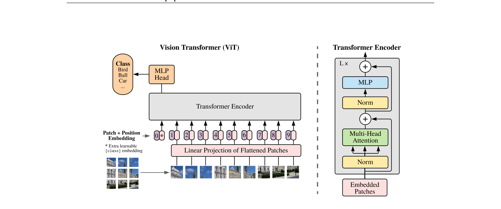
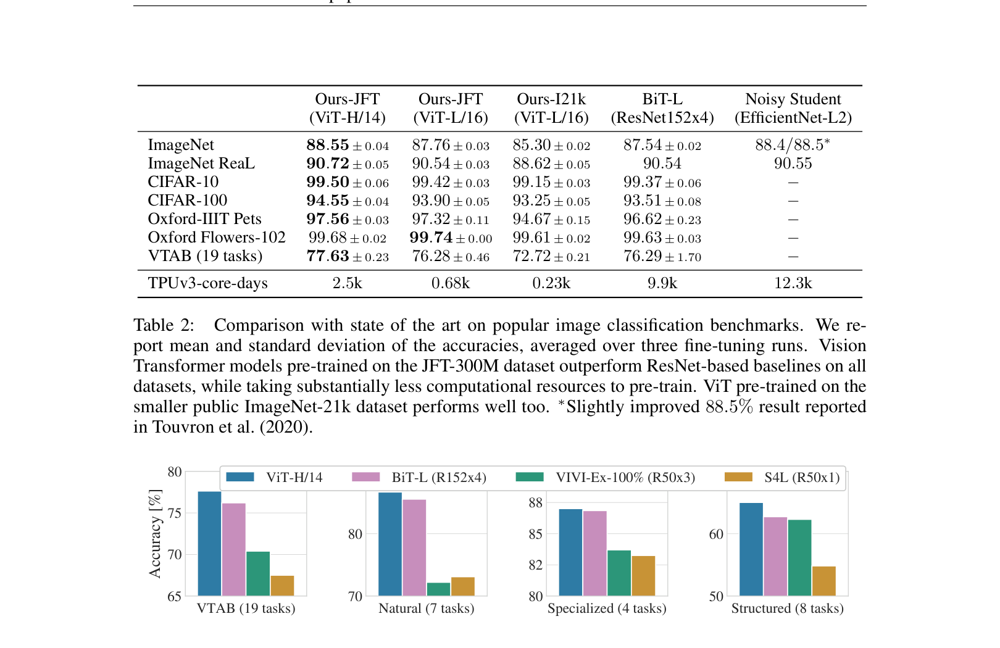
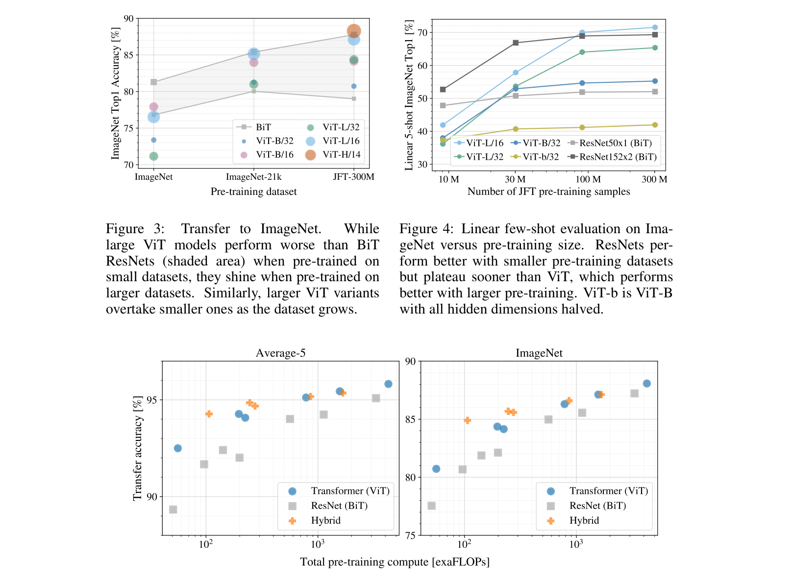

ViT¶
📄 论文链接：arXiv:2010.11929 | PDF
目录¶
核心要点¶
- 核心贡献：证明了直接将 NLP 中标准的 Transformer 应用于图像分类任务，无需任何针对视觉的特殊修改（除 patch 切分和位置编码外），在大规模数据预训练下可以取得与最优 CNN 相当甚至更好的结果。
- 关键方法：将图像切分为固定大小（如 16×16）的 patch，每个 patch 通过线性投影得到 embedding，加上可学习的位置编码和 [CLS] token 后，直接输入标准 Transformer Encoder 进行分类。
- 数据规模是关键：ViT 缺少 CNN 的归纳偏置（locality、translation equivariance），因此在中小数据集上表现不如 ResNet；但在 ImageNet-21k 或 JFT-300M 等大规模数据集上预训练后，全面超越同等计算量下的 CNN。
- 扩展性优异：模型性能随数据量和模型规模的增大持续提升，未出现饱和现象；且训练成本显著低于同等性能的 CNN。
- 深远影响：打破了 CV 与 NLP 的模型壁垒，开启了视觉领域 Transformer 时代，催生了 Swin Transformer、DETR、MAE 等大量后续工作，并推动了多模态统一架构的发展。
1. 背景与动机¶
1.1 ViT 的影响力¶
Vision Transformer 是过去一年计算机视觉领域影响力最大的工作，它挑战了自 2012 年 AlexNet 以来卷积神经网络（CNN）在 CV 领域的绝对统治地位。其核心结论是：在足够多的数据上做预训练，可以不需要 CNN，直接用从 NLP 搬来的标准 Transformer 也能把视觉问题解决得很好。
ViT 不仅在视觉领域产生了巨大影响，还打破了 CV 和 NLP 在模型上的壁垒，在多模态领域也引发了大量研究。短短一年内，基于 ViT 的公开论文已有上百篇，涵盖任务扩展、模型改进、分析研究、目标函数和训练方式改进等方向，开启了 CV 的新时代。
1.2 ViT 的效果验证¶
在 Papers With Code 网站上： - ImageNet 图像分类：排名靠前的方法全部基于 Vision Transformer - COCO 目标检测：前几名均基于 Swin Transformer（ICCV 2021 最佳论文，可理解为多尺度 ViT） - 其他领域：语义分割、实例分割、视频、医疗、遥感等，ViT 几乎刷新了所有视觉任务
1.3 ViT 的有趣特性¶
论文图 1 展示了 CNN 表现不佳但 ViT 能处理良好的场景： - 严重遮挡：即使人眼也难以辨认的遮挡情况 - 纹理去除：数据分布偏移导致图片外观极其异常 - 对抗性 patch：在特定位置添加对抗性扰动 - 排列组合：将图片打散重排后，CNN 难以判断物体类别
这些例子说明 ViT 具有与 CNN 截然不同的特征学习能力。
1.4 为什么之前没人成功¶
虽然技术上 ICLR 2020 的一篇论文已经做了类似的事情（在 CIFAR-10 上用 2×2 patch + self-attention），但 ViT 的核心区别在于： - 使用了更大的 patch（16×16），能处理中等分辨率（224×224）图片 - 在大规模数据集上预训练，证明了标准 Transformer 在大数据加持下可以匹配或超越最好的 CNN
1.5 把 Transformer 用到视觉的难点¶
Transformer 的自注意力操作是两两交互的，计算复杂度与序列长度的平方成正比。NLP 中序列长度一般为几百到上千（BERT 为 512），但视觉中： - 224×224 图片若以像素为单位，序列长度为 50,176（约为 BERT 的 100 倍） - 检测/分割任务输入更大（600×600 或 800×800），复杂度更高
之前的解决方案包括： - 使用中间特征图作为输入（如 CVPR 2018 Local Network）：ResNet 最后一个 stage 的特征图为 14×14，序列长度仅 196 - 局部窗口自注意力（Stand-Alone Attention）：限制自注意力的范围，类似卷积的局部操作 - 轴注意力（Axial Attention）：将 2D 矩阵拆分为两个 1D 向量，分别在高度和宽度维度做自注意力，大幅降低复杂度
但这些特殊自注意力操作缺乏硬件加速支持，难以训练大模型，效果远不及百亿/千亿级别的语言模型。
2. 方法¶

Figure 1: Vision Transformer 模型架构2.1 整体思路¶
ViT 的设计哲学是尽可能保持与原始 Transformer 一致，不做任何针对视觉任务的特殊改动。这样做的好处是： - 可以直接复用 NLP 中已验证有效的 Transformer 架构 - 可以利用已有的高效 Transformer 实现 - 证明标准 Transformer 本身就能解决视觉问题
2.2 Patch Embedding（图像块嵌入）¶
给定一张 H×W×C 的图片（如 224×224×3），将其切分为 P×P 大小的 patch（默认 P=16）： - patch 数量 N = HW/P² = 224²/16² = 196 - 每个 patch 展平后的维度为 P²×C = 16×16×3 = 768 - 通过一个可训练的线性投影层 E（全连接层，维度 768×D），将每个 patch 映射为 D 维的 patch embedding - 对于 ViT-Base，D=768，所以线性投影层为 768×768
经过线性投影后，得到 N 个 D 维 token，成功将 2D 图像问题转化为 1D 序列问题，等价于 NLP 中将句子分解为单词序列。
2.3 Class Token¶
借鉴 BERT 的做法，在 patch embedding 序列前面拼接一个可学习的特殊 token [CLS]： - 维度与其他 token 相同（D=768） - 经过 Transformer 多层交互后，[CLS] token 的输出被视为整张图片的全局特征表示 - 最终通过 MLP Head（使用 tanh 激活函数）进行分类预测
消融实验表明，也可以对所有输出 token 做 Global Average Pooling（GAP）来替代 [CLS] token，两者效果相当，但 GAP 需要单独调整学习率（直接使用 [CLS] 的学习率会导致效果下降约 5-6 个点）。作者选择 [CLS] token 是为了与原始 Transformer 保持一致。
2.4 Position Embedding（位置编码）¶
由于自注意力操作本身不具有顺序感知能力，需要加入位置编码来保留 patch 的空间位置信息。
ViT 使用的是可学习的 1D 位置编码（与 BERT 相同）： - 维护一个查找表，每一行对应一个位置的 D 维向量 - 位置编码与 patch embedding 是相加（sum）而非拼接（concatenation） - 加上位置编码后，序列维度不变，仍为 (N+1)×D = 197×768
消融实验对比了三种位置编码方式： - 1D 位置编码（本文采用） - 2D 位置编码：横纵坐标各用 D/2 维向量表示，拼接得到 D 维向量 - 相对位置编码：用 patch 之间的相对距离（offset）而非绝对位置
实验结果（Table 8）显示三种方式效果完全相同，不加位置编码则略有下降。作者解释这是因为 ViT 直接在较小的 patch 上操作（而非像素级），模型较容易学到小块之间的空间关系，因此位置编码的具体形式不太重要。
2.5 Transformer Encoder¶
Transformer Encoder 由 L 个相同的 Transformer Block 堆叠而成，每个 Block 包含： 1. Layer Norm → Multi-Head Self-Attention → 残差连接 2. Layer Norm → MLP → 残差连接
以 ViT-Base 为例（12 个头，D=768）的前向传播过程： - 输入：197×768 - Layer Norm 后：197×768 - Multi-Head Self-Attention：Q/K/V 各分为 12 个头，每个头维度为 768/12=64，即每个头处理 197×64，12 个头的输出拼接后恢复为 197×768 - Layer Norm 后：197×768 - MLP：先扩展到 4 倍维度（197×3072），再投射回 197×768 - 输出：197×768
由于每个 Block 输入输出维度一致，可以无限堆叠。L 层 Block 构成完整的 Transformer Encoder。
2.6 归纳偏置分析¶
与 CNN 相比，ViT 缺少以下图像特有的归纳偏置（inductive bias）： - Locality（局部性）：CNN 通过滑动窗口假设相邻区域有相关特征 - Translation Equivariance（平移等变性）：CNN 的卷积核作为模板，无论物体在图中哪个位置，相同输入产生相同输出（f(g(x)) = g(f(x))）
ViT 中仅有 MLP 层具有局部性和平移等变性，自注意力层是全局的。2D 图像信息仅在 patch 切分和位置编码时有所体现，其余部分完全没有视觉先验。这意味着 ViT 需要从数据中自行学习所有视觉感知能力，因此在数据量不足时表现不如 CNN。
2.7 混合模型（Hybrid Architecture）¶
结合 CNN 和 Transformer 的优势： - 不再将图片切成 patch，而是先用 CNN（如 ResNet-50）提取特征图（14×14） - 将特征图展平为 196 个元素，再通过线性投影得到 patch embedding - 后续操作与标准 ViT 完全相同
混合模型在小规模时精度高于纯 ViT 和纯 ResNet，但随着模型增大，逐渐与纯 ViT 持平甚至略低。
2.8 微调时的分辨率适配¶
微调时使用更大的图像尺寸（如 256×256 或 320×320）可以提升效果。当保持 patch size 不变时，序列长度会增加，预训练好的位置编码无法直接使用。ViT 采用 2D 插值（torch.nn.functional.interpolate）将位置编码适配到新尺寸。但这只是临时方案，当序列长度变化过大时（如从 256 到 768），简单插值会导致性能下降。这也是 ViT 中唯一使用 2D 归纳偏置的地方。
3. 实验¶

Figure 2: VTAB 各任务组性能分解3.1 数据集¶

Figure 5: 性能 vs 预训练计算量的 scaling 曲线- 预训练数据集：ImageNet-1k（120 万张，1000 类）、ImageNet-21k（1400 万张，21000 类）、JFT-300M（Google 内部数据集，3 亿张）
- 下游评估数据集：CIFAR-100、Oxford Pets、Oxford Flowers、ImageNet-ReaL、VTAB（19 个数据集的集合，测试模型稳健性）
3.2 模型变体¶
三种规模，命名格式为 ViT-{size}/{patch_size}： - ViT-B（Base）：12 层，隐藏维度 768，12 个头 - ViT-L（Large）：24 层，隐藏维度 1024，16 个头 - ViT-H（Huge）：32 层，隐藏维度 1280，16 个头
Patch size 越小，序列长度越长，计算越贵（如 ViT-L/8 比 ViT-L/16 贵很多）。
3.3 主要结果（Table 2）¶
在大规模数据集预训练后微调的表现： - ViT-H/14 在所有数据集上取得最好结果 - 与 BiT（ResNet 大数据集版本）和 Noisy Student（伪标签自训练 SOTA）相比，ViT 不仅效果更好，训练成本也显著更低
3.4 数据规模的影响（Figure 3 — 最重要的 Take-Home Message）¶
在不同规模数据集上预训练后，在 ImageNet 上微调的效果对比： - ImageNet-1k 预训练：ViT 全面不如 ResNet（缺少归纳偏置，数据不够） - ImageNet-21k 预训练：ViT 与 ResNet 基本持平 - JFT-300M 预训练：ViT 全面超越 ResNet，即使最小的 ViT-B/32 也优于 ResNet-50，最大的 ViT-H/14 优于 BiT-ResNet-152
核心结论： 1. 如果只有小数据集，仍然应该用 CNN 2. 如果有超大数据集，ViT 的扩展性更好，能获得更高性能
3.5 Linear Few-Shot Evaluation（Figure 4）¶
使用 JFT 的不同子集（10M/30M/100M/300M）预训练，冻结模型参数，仅在 ImageNet 每类随机选 5 个样本做线性回归评估： - 小数据预训练时 ViT 远不如 ResNet（缺少归纳偏置和正则化手段，容易过拟合） - 随数据增大，ViT 稳健性提升 - 小样本学习是 ViT 的一个有前途的研究方向
3.6 训练效率分析（Figure 5）¶
所有模型均在 JFT-300M 上预训练，比较不同计算量下的性能： - 同等计算量下，ViT 普遍优于 ResNet，验证了"训练更便宜"的说法 - 混合模型在小规模时最优，但随模型增大逐渐被纯 ViT 追平甚至超越 - ViT 的性能随模型增大持续提升，无饱和迹象
3.7 可视化分析¶
Patch Embedding（Figure 7 左）¶
第一层线性投影学到的基函数类似 Gabor Filter，包含颜色和纹理信息，与 CNN 第一层学到的特征相似，能够描述图像块的底层结构。
Position Embedding（Figure 7 中）¶
位置编码的余弦相似度矩阵显示： - 距离越近的 patch，位置编码相似度越高（黄色） - 同行同列的 patch 相似度更高 - 虽然使用的是 1D 位置编码，但已自动学到了 2D 空间距离的概念 - 这解释了为何 2D 位置编码没有带来额外提升
Self-Attention Distance（Figure 7 右）¶
Mean Attention Distance（平均注意力距离 = 像素间实际距离 × 注意力权重）随网络深度的变化： - 浅层：部分头关注近距离（~20 pixel），部分头已能关注远距离（~120 pixel），证明自注意力在网络最底层就能捕获全局信息（不同于 CNN 的小感受野） - 深层：注意力距离越来越远，表明学到了更高层的语义概念，不再依赖邻近像素
Attention Rollout（Figure 6）¶
将最后一层输出 token 的注意力折射回原图，发现模型确实关注到了与分类相关的语义区域（如狗、飞机等物体的位置）。
3.8 自监督预训练尝试¶
借鉴 BERT 的 Masked Language Modeling，提出 Masked Patch Prediction： - 随机遮盖部分 patch，让模型重建被遮盖的 patch - 比从头训练有所提升，但仍低于有监督训练
作者将对比学习列为 future work。后续 MoCo v3 和 DINO 等工作证明了用对比学习训练 ViT 的有效性，MAE 则进一步证明了自监督方式训练 ViT 可以超越有监督方法。
4. 总结¶
4.1 论文写作评价¶
论文写得简洁明了，在有大量内容和结果的情况下做到了有轻有重，最重要的结果放在正文，图表一目了然。相关工作部分详尽清晰，明确区分了与前人工作的差异，不会降低创新性，反而使文章更易理解。
4.2 ViT 作为"挖坑之作"¶
ViT 是一篇极具影响力的开创性论文，从多个角度开辟了研究方向：
- 任务扩展：ViT 仅做了分类，后续迅速扩展到检测（ViT-FRCNN，2020.12）、分割（SETR，2020.12）、Swin Transformer（2021.03，引入多尺度设计，成为通用视觉骨干）
- 模型改进：修改 tokenization 方式、替换 Transformer Block 中的组件（如 MetaFormer 将 self-attention 替换为池化操作仍能工作良好）
- 训练方式：从有监督到自监督（MAE、BEiT）、对比学习（MoCo v3、DINO）
- 规模化：同一团队后续发表 Scaling Vision Transformers，提出 ViT-G，进一步推高 ImageNet 性能
4.3 更深远的意义¶
ViT 打通了 CV 和 NLP 之间的鸿沟，使得多模态统一架构成为可能。此后多模态领域工作井喷式增长，各种模态（视频、音频、触觉信号等）都可以用统一的 Transformer 架构处理。
4.4 开放问题¶
- 卷积、自注意力、MLP 究竟哪种算子最适合视觉任务仍未定论
- 如何在不依赖大量标注数据的情况下训练出强大的视觉模型
- 是否存在一个简洁高效、通用的视觉骨干网络，且完全不需要标注信息